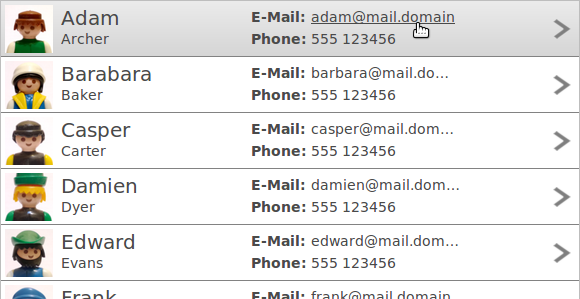
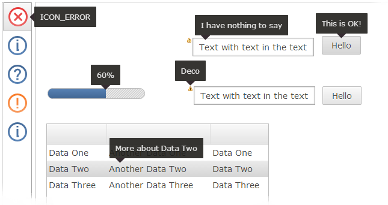

Here's a list of the most noteworthy things in the RAP 2.2 release which is available for download since December 20, 2013.
You may also check the New and Noteworthy for RAP 2.0 and the RAP 2.0 migration guide.
We introduced row templates, a new feature that allows you replace the column layout model of a table ore tree with a custom presentation. Templates consist of cells that can be freely arranged. A cell can display a text or an image from the table item, but also static content.

To apply a row template on a Table or a Tree, use the setData() method with the new constant RWT.ROW_TEMPLATE as key:
Table table = new Table( parent, SWT.FULL_SELECTION ); // Add as many columns as a single table item will have texts/images: new TableColumn(); Template template = new Template(); // ... create template cells here, the set the template: table.setData( RWT.ROW_TEMPLATE, template );
To position a cell, you have to set exactly two horizontal and two vertical dimensions (two out of left, right, and width and two out of top, bottom, and height). Cells can also be selectable. When a selectable cell is clicked it does not mark the the item itself as selected. Item selection is still possible (clicking anywhere but on a selectable cell), but only visualized if the SWT.FULL_SELECTION flag is set.
Row templates are currently supported by Tree and Table, but we plan to apply this concept on other widgets in the future. All details are covered in the Developer's Guide article on Tree and Table Enhancements.
The FileUpload widget now allows selecting and uploading multiple files at once in HTML5 enabled browsers. To enable this feature, create the widget with the SWT.MULTI style flag like this:
FileUpload fileUpload = new FileUpload( parent, SWT.MULTI );
To obtain the filenames from the widget, the method getFileNames has been introduced. The method getFileName still exists and will return the first selected file.
In browsers that do not support this feature (such as Internet Explorer 8) the MULTI flag will simply be ignored.
The RAP Incubator file upload component and the FileDialog implementation have been updated to make use of this new feature.
The look and feel of tooltips has been improved and fine-tuned:

The ToolTipText property and the ToolTip widget now support markup, including hyperlinks. To enable tooltip markup for on any widget with a setToolTipText method, use the RWT.TOOLTIP_MARKUP_ENABLED constant like this:
widget.setData( RWT.TOOLTIP_MARKUP_ENABLED, Boolean.TRUE ); widget.setToolTipText( "This is a tooltip<br/><i>with</i> <b>some</b> <big>markup</big>" );

For the ToolTip widget, the API is the same as it is for other widget:
toolTip.setData( RWT.MARKUP_ENABLED, Boolean.TRUE );
To improve the responsiveness of a virtual Tree or Table, we added the possibility to specify a number of items to be pre-loaded by the client. When scrolling the table in small steps, pre-loaded items will appear immediately. Example:
Table table = new Table( parent, SWT.VIRTUAL ); table.setData( RWT.PRELOADED_ITEMS, new Integer( 10 ) );
With this snippet, in addition to visible items in the Tree/Table client area, another 10 items (above and below) will be resolved and sent to the client.
The ClientScripting project has been graduated from the incubator and is now included in the RAP core as “RWT Scripting”. Using the new ClientListener class, it is possible to handle some events directly on the client without the usual latency caused by HTTP requests.
The following widgets support ClientListener:
|
|
Supported events are:
|
|
Consult the new Developers Guide Scripting article for information on ClientListener, and the WebClient API reference to find out what widget methods are available in RWT Scripting.
Note: The ClientScripting incubator project is no longer compatible with RAP 2.2 and must be used only with older RAP versions. If you port code based on the incubator ClientScripting to RAP 2.2 Scripting, please note that the namespace for ClientListener has been changed to org.eclipse.rap.rwt.scripting. Also, the number of supported widgets and methods has been reduced, but in return the properties are now always synchronized back to the server.
Data attached to an SWT widget can now be transferred to the client to access it in scripting. To do so, the key for that data has to be registered with WidgetUtil.registerDataKeys. Example:
WidgetUtil.registerDataKeys( "foo" ); widget.setData( "foo", "bar" );
A ClientListener can use the data like this:
function handleEvent( event ) {
var data = event.widget.getData( "foo" );
}
This feature can also be used to access other scriptable widgets within a ClientListener.
Instances of ApplicationContextListener can be attached to an application context to receive a notification before the application context is destroyed.
The JavaScriptLoader implementation has been improved in the following aspects:
We've polished the look and feel of tooltips in the default theme (see above). To do so, a new theming element has been introduced: Widget-ToolTip-Pointer. This element has a single property background-image and four states, up, down, left, and right. This property allows to attach a pointer image to one edge of the ToolTip. The state indicates the direction that the ToolTip points to. The image should match the background and/or border color of the ToolTip theming. A full set of four images would be defined like this:
Widget-ToolTip-Pointer {
background-image: none;
}
Widget-ToolTip-Pointer:up {
background-image : url( tooltip-up.png );
}
Widget-ToolTip-Pointer:down {
background-image : url( tooltip-down.png );
}
Widget-ToolTip-Pointer:left {
background-image : url( tooltip-left.png );
}
Widget-ToolTip-Pointer:right {
background-image : url( tooltip-right.png );
}
It is now also possible to set the horizontal alignment for texts in tooltips.
Widget-ToolTip {
text-align: left;
}
Since tooltips are only as wide as their content, this only has a visible effect if the tooltip has a newline in it, e.g.:
widget.setToolTipText( "This has a \n new line" );
The default value is center.
The theming was extended in several other places:
There has long been an issue with RAP applications deployed as .war files that could not be properly stopped or undeployed and even prevented the servlet container from shutting down. These problems have been fixed. Stopping and undeploying RAP applications works as expected now.
An overview of what changed in the RAP protocol can be found in the RAP Wiki.
This list shows all bugs that have been fixed for this release.
To assist you with the migration from RAP 2.x (or 1.x) to 3.0, we provide a migration guide.
 Copyright © 2024 The Eclipse Foundation. All Rights Reserved.
Copyright © 2024 The Eclipse Foundation. All Rights Reserved.